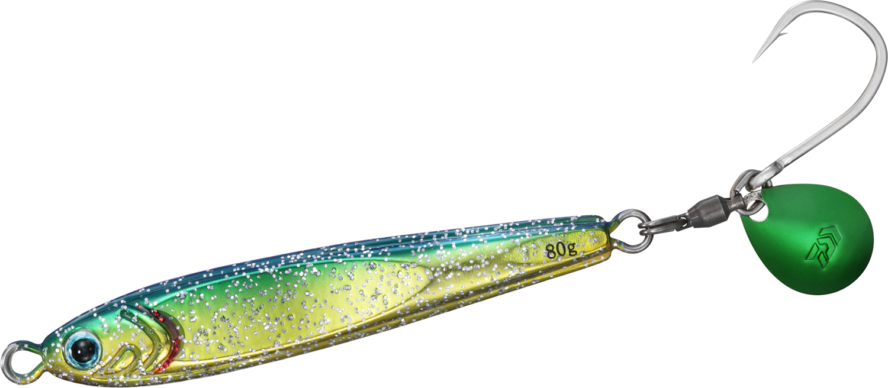
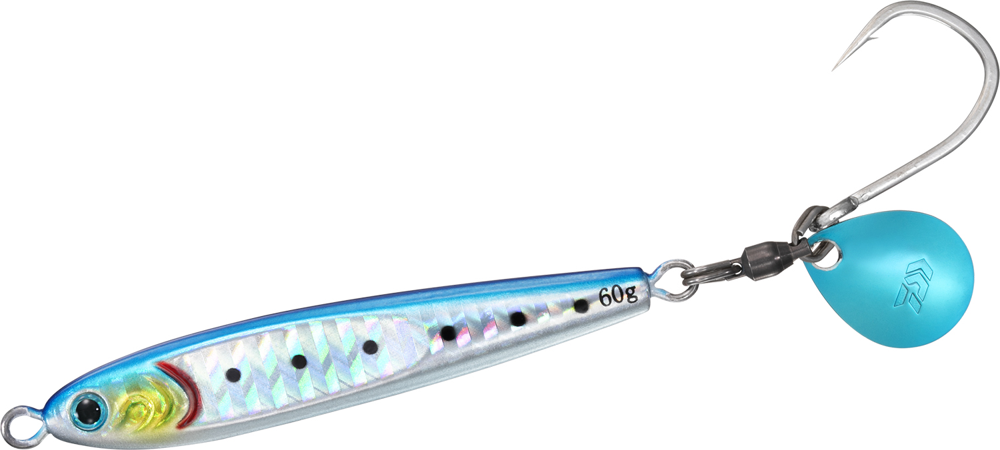
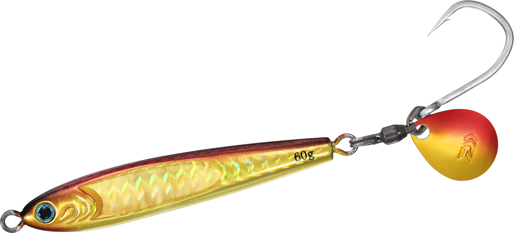

TGベイト BLJ
（TG BAIT BLJ）
TGベイト BLJは、ダイワのタングステンジグ「TGベイト」に、ブレード付きのアシストフック「BLJアシストフックSS」を標準装備したモデルです。
鉛の約1.7倍の比重があるタングステン製で、小さなシルエットのまま遠くまで飛ばせて、ブレードのフラッシングでもアピールできるのが最大の魅力。30gから100gまで5つの重さがあります。

画像出典:DAIWA公式HP
スペック
- メーカー
- DAIWA（ダイワ）
- タイプ
- タングステンジグ（ブレード付きアシストフック標準装備）
- 重さ／サイズ
- 30g／55mm、45g／64mm、60g／68mm、80g／80mm、100g／87mm
- 素材
- タングステン
- フック
- BLJアシストフックSS（サクサスボールベアリングスイベル付き）
- カラー
- 全12色
- ターゲット
- サワラ・サゴシ・青物
- 価格
- 2,300円（30g）〜4,800円（100g）（税抜）
▼今すぐチェック

TGベイト BLJの特徴
TGベイトの小さなシルエットに、ブレードのフラッシングをプラス
-
タングステンで小さくても遠くまで飛ぶ
鉛の約1.7倍の比重があるタングステン製なので、小さなシルエットでもしっかり重さがあり、ストレスなく遠くまで投げられる。イワシを模したリアルな形のまま、高比重ボディを動かすための左右非対称デザイン。
-
スイミングとスライドフォール
巻けば確実に泳ぎ、フォールでは水平に近い姿勢でスライドして弱ったベイトを演出する。センターバランス設計なので、ジャークの後すぐに水平姿勢に移ってスライドフォールし、魚に口を使わせる。
-
BLJアシストフックSSを標準装備
サクサスボールベアリングスイベルでブレードが滑らかに回り、ルアーのブレが少なく引き抵抗も軽い。オーバル型のスプリットリングで、フックの交換もスムーズ。TGベイト BLJにしかないブレードカラーも採用している。
TGベイト BLJの使い方
岸からは30g・45g、船からは水深に合わせて60g〜100gを選びます。基本は着底したら速めのただ巻きでブレードを回し、ときどきジャークを入れてスライドフォールさせる使い方です。
ただ巻きでブレードのフラッシング、ジャーク後のフォールでスライドと、2つの誘いを組み合わせられます。アタリはフォール中に出ることも多いので、ラインの変化に注意しましょう。
TGベイト BLJの得意な状況
サワラやサゴシ、青物がイワシなどの小さなベイトを追っている場面で出番です。
タングステンの小さなシルエットで、ベイトが小さい時やスレた時でも見切られにくく、遠くのナブラにも届くのが強み。潮が速い場所や深場でも底を取りやすく、船のブレードジギングでも釣れます。
ワンポイント
サワラの歯でラインを切られる「カッター」が多いときは、リーダーの先にワイヤーリーダーや太めのリーダーを入れると安心です。タングステンジグは値段が高めなので、根掛かりしやすい場所では巻き上げを早めにしましょう。
サワラ狙いならワイヤーリーダーも
サワラ・サゴシの鋭い歯でリーダーごとジグを切られないように、ジグの前に30cm以内の短いワイヤーリーダーを付けておくと安心です。カッターが少ない日は外して、状況に合わせて使い分けましょう。くわしくはサワラのブレードジギング完全ガイドで紹介しています。

人気カラー
TGベイト BLJの人気カラーを紹介します。
 サワラオレンジグロー
サワラオレンジグロー
名前のとおりサワラ狙いのカラー。オレンジとグローで朝夕や濁りにも。

MLケイムラエメラルドグリーンゴールドケイムラで光る緑金。朝マズメや曇りの日に。

PHマイワシイワシを食べている時の定番ナチュラルカラー。

PH赤金赤と金のアピールカラー。濁りや朝夕のマズメに。
画像出典:DAIWA公式HP
▼今すぐチェック
TGベイト BLJに似ているルアー
-
 TGベイト
ダイワ
詳細はこちら＞
TGベイト
ダイワ
詳細はこちら＞
ブレードの無いノーマルのTGベイト。ジギングやフォールで食わせたい時に。
-
 メタルマジックTG
アクアウェーブ
詳細はこちら＞
メタルマジックTG
アクアウェーブ
詳細はこちら＞
タングステンのスピンテールジグ。ブレードを後ろで回して巻きで食わせたい時に。
-
 サムライジグR スピン
ダイワ
詳細はこちら＞
サムライジグR スピン
ダイワ
詳細はこちら＞
鉛のブレードジグ。値段を抑えて数をそろえたい時に。